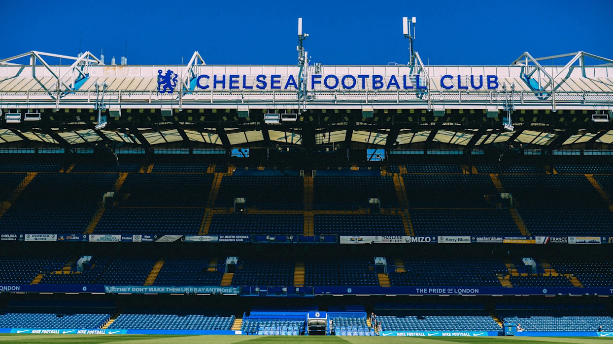
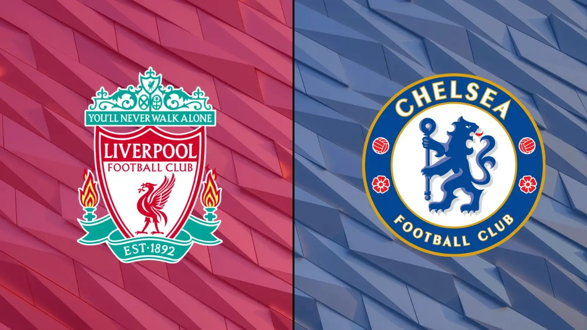

The Premier League game between the standing champion Liverpool and the winner of the FIFA Club World Cup Chelsea took place on 4th of October 2025 in London, at Stamford Bridge, on Chelsea's home turf.

Following an intense game, Chelsea won 2-1, with a late stoppage-time goal by Estevão Willian sealing the victory. The match was dramatic: Moisés Caicedo scored for Chelsea, Liverpool equalized via Cody Gakpo, but Chelsea struck again at the death.

Their next scheduled meeting will not occure until 9th of May 2026.

The next five games for these teams are as follow:
| Team | Tournament | Date | Rival Team |
|---|---|---|---|
| Liverpool | Premier League | 19 October 2025 | Manchester United (Home) |
| Champions League | 22 October 2025 | Eintracht Frankfurt (Away) | |
| Premier League | 25 October 2025 | Brentford (Away) | |
| Premier League | 1 November 2025 | Aston Villa (Home) | |
| Champions League | 4 November 2025 | Real Madrid (Home) | |
| Chelsea | Premier League | 22 October 2025 | Nottingham Forest (Away) |
| Champions League | 22 October 2025 | Ajax (Home) | |
| Premier League | 25 October 2025 | Suderland (Home) | |
| Premier League | 1 November 2025 | Tottenham Hotspur (Away) | |
| Champions League | 5 November 2025 | Qarabag (Away) |